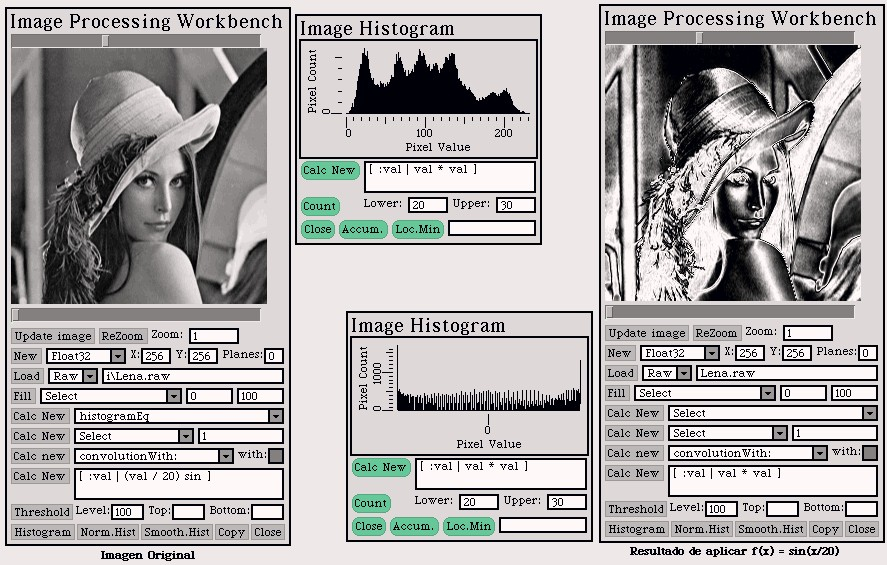
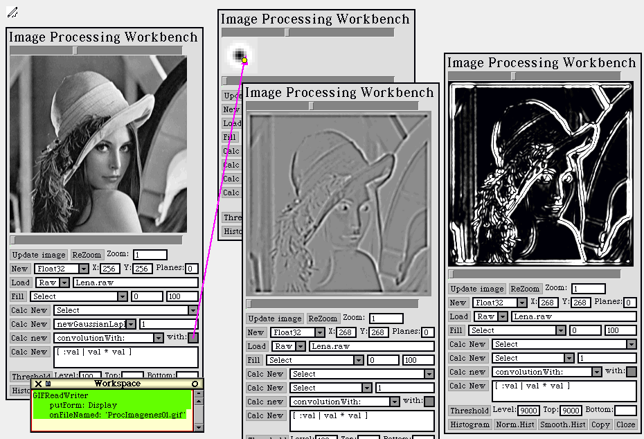

PhotoSqueak
1.0
PhotoSqueak
1.0
by Juan Manuel Vuletich
Back to Juan's studio


Part 2
Exercise 1
It was asked to implement the Thershold operation, and
the binarization of an image with a threshold level. I didn't include any
example here, but you can try them if you want.
Exercise 2
It was asked to be able to apply any function to the
pixel values of an image, and/or to the histogram, calculating the new
image and/or histogram.

-
Imagen Original = Original Image
-
Resultado de aplicar f(x) = sin(x/20) = Result of applying f(x) = sin(x/20)
Exercise 3
It was asked to implement the convolution operation
of two images. As this is a numerically expensive operation, I used Squeak
C code generation, from the already tested Smalltalk code. This C code
was compiled both as a OS/2 and as a Windows dll, that is automatically
called if present (if it is not present, the slower Smalltalk code is invoked).
This way, times ranging from 2 to 10 minutes went down to 2 to 10
seconds.
In this sample screen, it can be seen how a low pass filter emphatizes
borders. In the center image, black or large negative values, and white
or large positive values are boteh borders. The image on the right, is
the center image squared. So, borders are bright white, and non-borders
are black. Several other filters were also used.
